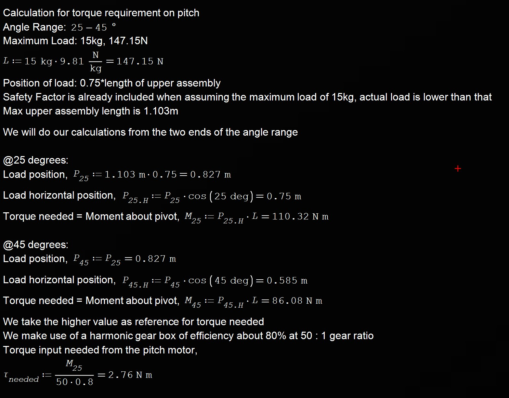

<section id="pitchmech" data-aos="fade-left">
    <div class="flex flex-col gap-16 border-b border-zinc-900 pb-16">
        
        <!-- Top row -->
        <div class="flex flex-col md:flex-row items-start justify-between gap-12">
            
            <!-- Left side: title + intro -->
            <div class="flex-1 flex flex-col gap-8">
                <h3 class="text-4xl font-bold text-red-primary uppercase tracking-tighter">
                    Pitch Subsystem Design
                </h3>
                <p class="text-gray-400 text-xl leading-relaxed border-l-2 border-red-900 pl-8">
                    A launcher does not get on target by luck. This compact pitch subsystem delivers the torque to make the angle happen.
                </p>
            </div>

            <!-- Right side: image card -->
            <div class="w-48 shrink-0 text-center group">
                <div class="relative mb-4">
                    
                    
                    <div class="absolute -bottom-2 -right-2 bg-red-600 text-[9px] font-black text-white px-2 py-1 rounded uppercase tracking-tighter">
                        Lead Eng
                    </div>
                </div>
                
                <h4 class="text-white font-bold text-xl mb-0">Jian Wen</h4>
                <p class="text-red-primary font-mono text-xs uppercase tracking-widest font-bold mt-1">Y4 ME</p>
            </div>
        </div>

        <div>
            <h2 class="text-4xl font-bold text-white mb-6">Drive System Considerations</h2>
            <p class="text-zinc-250 text-lg leading-relaxed">
                A direct drive assisted by a reducer gearbox was selected as the appropriate drive system. A direct drive system offers 
                less mechanical complexity and potential points of failure, which is important on a subsystem that handles high loads and 
                torque, which the calculations revealed.
            </p>
            <p class="text-zinc-250 text-lg leading-relaxed">
                An additional reducer gearbox allows us to make use of a DC Brushed motor, which is simple 
                to use and reduces the overall cost needed for the direct drive system. The gearbox also acted as a brake, allowing the system 
                to hold its position even when the motor is not powered. A harmonic gearbox was chosen due to its compact size and torque 
                handling capability. The calculations involving the expected load and the required torque of the pitch motor is shown below.
            </p>
        </div>

        <details class="group mt-8">
            <summary class="flex items-center justify-between cursor-pointer list-none rounded-xl border border-zinc-800 bg-black/40 px-6 py-4 text-white font-bold text-xl">
                <span>Pitch Torque Requirement Calculations</span>
                <span class="text-red-primary transition-transform duration-300 group-open:rotate-180">⌄</span>
            </summary>

            <div class="grid grid-cols-1 md:grid-cols-1 gap-4">
                
            </div> 
        </details>

        <details class="group mt-8">
            <summary class="flex items-center justify-between cursor-pointer list-none rounded-xl border border-zinc-800 bg-black/40 px-6 py-4 text-white font-bold text-xl">
                <span>Pitch Speed Calculations</span>
                <span class="text-red-primary transition-transform duration-300 group-open:rotate-180">⌄</span>
            </summary>

            <div class="grid grid-cols-1 md:grid-cols-1 gap-4">
                
            </div> 
        </details>

        <div>
            <p class="text-zinc-250 text-lg leading-relaxed">
                From the calculations, we see that the expected maximum torque is 110.3 Nm, and with a harmonic gearbox of 50:1 reduction 
                ratio and an expected efficiency of 80%, the required torque of the drive motor was 2.76 Nm, an updated number from that in 
                the interim report. 
            </p>
        </div>

        <div>
            <h2 class="text-4xl font-bold text-white mb-6">Final Design of Pitch Subsystem</h2>
        </div>

        <div class="grid grid-cols-1 md:grid-cols-1 gap-6 mb-24 px-4">
            <div class="bg-zinc-950 rounded-2xl border border-red-900/30 p-4 h-[400px] relative">
                <span class="absolute top-4 left-4 z-10 bg-red-600 text-[10px] font-black px-2 py-1 rounded uppercase">Dynamic Base V2</span>
                <model-viewer src="assets/JW/pitch_direct_v2.glb" camera-controls auto-rotate shadow-intensity="1" class="w-full h-full"></model-viewer>
            </div>
        </div>

        <div>
            <p class="text-zinc-250 text-lg leading-relaxed">
                The final design of the pitch subsystem can be seen above. Several iterations and revisions were made to the pitch subsystem, 
                incorporating integration elements for the yaw subsystem, and the upper assembly. The major revision evolutions can be seen 
                below.  
            </p>
        </div>

        <div class="flex flex-col md:flex-row items-center justify-center gap-4">
            
            <div class="w-full md:w-1/4 text-center">
                
                <p class="text-zinc-300 text-sm">Iteration 1, dual z-axis with linear rail compensators</p>
            </div>

            <div class="flex items-center justify-center w-10 h-10 rounded-full bg-zinc-900 border border-zinc-700 text-red-primary text-2xl font-bold shrink-0">
                →
            </div>

            <div class="w-full md:w-1/4 text-center">
                
                <p class="text-zinc-300 text-sm">Iteration 2, 4 bar linkage setup</p>
            </div>

            <div class="flex items-center justify-center w-10 h-10 rounded-full bg-zinc-900 border border-zinc-700 text-red-primary text-2xl font-bold shrink-0">
                →
            </div>

            <div class="w-full md:w-1/4 text-center">
                
                <p class="text-zinc-300 text-sm">Iteration 3, direct drive</p>
            </div>

            <div class="flex items-center justify-center w-10 h-10 rounded-full bg-zinc-900 border border-zinc-700 text-red-primary text-2xl font-bold shrink-0">
                →
            </div>

            <div class="w-full md:w-1/4 text-center">
                
                <p class="text-zinc-300 text-sm">Final Design, improved direct drive with integration elements</p>
            </div>
        </div>

        <div>
            <h3 class="inline-block text-2xl text-white font-semibold border-b-2 border-red-primary pb-1">Dual z-axis iteration</h3>
            <p class="text-zinc-250 text-lg leading-relaxed">
                This iteration featured two z-axis lead screws driven by stepper motors located at the bottom. Inspired greatly by the 
                dual z-axis setup on many modern 3D printers, the setup was designed to be capable of driving high loads vertically. The 
                setup would eliminant the cantilever effect brought about by the length and expected of the upper assembly. However, the 
                setup has multiple flaws.
            </p>
            <p class="text-zinc-250 text-lg leading-relaxed">
                The dual z-axis offers little to no braking when power is turned off, posing a safety hazard to users and equipment, should 
                the operator fail to properly secure the upper assembly before cutting off power. Furthermore, more mechanical components 
                such as compensation linear rails and rotary joints, are needed to translate the turning motion of the lead screw into the 
                rotation needed to adjust the pitch. Furthermore, alignment concerns between the two z-axis components complicate the system, 
                making the pitch become more unreliable for little to no gain in benefit. The idea was hence discontinued.
            </p>
            <h3 class="inline-block text-2xl text-white font-semibold border-b-2 border-red-primary pb-1">4-Bar Linkage iteration</h3>
            <p class="text-zinc-250 text-lg leading-relaxed">
                One other approach was the 4-bar linkage setup, which usually allows for high mechanical torque transfer for small angle 
                adjustments, meaning a smaller, more compact motor could be used for the pitch instead.
            </p>
            <p class="text-zinc-250 text-lg leading-relaxed">
                However, the angle range needed to cover was 20 degrees minimum, and this angle is counted large for the 4-bar linkage setup. 
                Covering this range would make the setup lose its mechanical benefits of driving torque and holding torque, resulting in a 
                stronger motor being needed to drive the setup. This idea was hence discontinued in favour of the direct drive setup.
            </p>
            <p class="text-zinc-250 text-lg leading-relaxed">
                The isolated subsystem is capable of full 360-degree rotation for pitch motion, but this will be restricted to a smaller 
                range once all other subsystems are in place due to the requirements of RMUC rules.
            </p>
        </div>

        <div>
            <h2 class="text-4xl font-bold text-white mb-6">Integration with other subsystems</h2>
            <p class="text-zinc-250 text-lg leading-relaxed">
                Mounting locations were allocated for the pitch subsystem to slide onto the rails situated on the yaw subsystem. 
                The pitch subsystem is then allowed to rest on the yaw, with the load acting on the slewing bearing and supported by the 
                yaw frame.
            </p>
            <p class="text-zinc-250 text-lg leading-relaxed">
                For the upper assembly, two points of contact with the pitch subsystem is expected, one at the rotating portion of the 
                gearbox, and the other on the opposite end of the pitch subsystem from the gearbox. At these two locations, integration 
                elements are introduced to connect the pitch subsystem to the upper assembly, or more specifically, to the launcher subsystem.
            </p>
        </div>

        <div class="grid grid-cols-1 md:grid-cols-2 gap-4">
            
            
        </div>

        <div class="grid grid-cols-1 md:grid-cols-2 gap-4">
            
            
        </div>

        <div>
            <p class="text-zinc-250 text-lg leading-relaxed">
                The figures above show how the two subsystems are connected. Both contact points are designed to be rotating joints, with 
                the gearbox transmitting the driving torque for pitching movement. The other end is designed to be a passive rotary joint 
                about a bearing. The gearbox was chosen for its ability to sustain the expected load of the upper assembly, while the 
                bearing and passive rotary joint were chosen and designed to be able to sustain the load as well. 
            </p>
        </div>

         <div>
            <h2 class="text-4xl font-bold text-white mb-6">Validation and testing</h2>
            <h3 class="inline-block text-2xl text-white font-semibold border-b-2 border-red-primary pb-1">Functionality testing</h3>
            <p class="text-zinc-250 text-lg leading-relaxed">
                Basic functionality tests for the pitch include finding the maximum pitch angles after integration with other subsystems, 
                as well as checking that no immediate failures occur during operation of the pitch. 
            </p>
            <p>
                From our test of the maximum angles using a calibrated digital angle gauge, the pitch is able to reach a maximum range of 
                0.6 degrees to 52.7 degrees, before beginning to interfere with other components on board the dart robot. This maximum range 
                shows that the pitch is able to accommodate the 25-45 degree range limitation as stated in the RMUC rules. Additional 
                endstops are included at the 35 and 45 degree marks to limit the pitch angles to be within requirements according to the rules. 
            </p>
        </div>

         <div class="grid grid-cols-1 md:grid-cols-2 gap-4">
            
            
        </div>

        <div>
            <p class="text-zinc-250 text-lg leading-relaxed">
                Additionally, we conducted a stress test of the pitch, which is essentially putting the pitch, under full load, through 
                about 50 repetitions of movement between the 0.6 to 52.7 degree range, at varying pitch speeds. Through the stress test, 
                there were no visible failures or fatigue from the pitch motor or physical structural components on the pitch subsystem. 
            </p>
        </div>

        <div>
            <h3 class="inline-block text-2xl text-white font-semibold border-b-2 border-red-primary pb-1">Validation: Time Taken to Pitch</h3>
            <p class="text-zinc-250 text-lg leading-relaxed">
                In the competition, there may arise the need to quickly adjust the pitch angle when it is out of place for any reason. 
                In the worst case, the pitch is required to adjust from the lower limit to the upper limit quickly, as the desired pitch 
                angle for launch is close to the upper limit of 45 degrees. 
            </p>
            <p class="text-zinc-250 text-lg leading-relaxed">
                Selection of the pitch motor with the gearbox had already included the consideration of pitching speed, and the calculated 
                time take to clear the 20 degree range was 1.85s. The calculations can be seen in detail above, under Pitch Speed Calculations.
            </p>
            <p class="text-zinc-250 text-lg leading-relaxed">
                Our test involved adjusting the pitch to the lower limit of 25 degrees and pushing the pitch at operational speed to the 
                upper limit of 45 degrees. The angle will be monitored by our digital angle gauge. Through the operation, time will be 
                taken using a stopwatch for the duration needed to reach the 45-degree limit. 
            </p>
            <p class="text-zinc-250 text-lg leading-relaxed">
                A total of 10 repetitions were conducted in one test. Our target timing, to accept that the pitch speed is validated 
                according to calculations, is to clear the 20-degree range within 1.85 seconds. The test results for time taken is shown below.
            </p>
        </div>

        <!--insert results for Speed to Pitch-->

        <div>
            <p class="text-zinc-250 text-lg leading-relaxed">
                From the results, we can see that the average time taken between the repetitions is 1.60 seconds, which is faster than the 
                original calculated time taken. The derivation from our calculations can be attributed to the final load the pitch needs to 
                drive being lower than the maximum expected load used in our calculations. Since the actual time taken to clear the range is 
                well within the 1.85s target, we accept the speed of the pitch, and the speed is validated.
            </p>
        </div>
    </div>
</section>